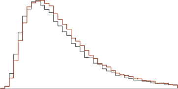

“Why trust your assumptions?”
You do not have to. The assumptions, ranges, and evidence are explicit enough to challenge.
Conditional underwriting
A plan can be coherent, carefully built, and
still describe
only one path. Brenwick makes
the uncertainty around
that path explicit, so
the investor can examine the range
and the
conditions it implies.
Figure 1
Conditional underwriting
Monthly revenue, € thousands · one line per simulated future
Figure 1 - One possible path
Future fan chart: founder forecast against the plausible paths implied by the model.
SPECIMEN · Demo company
The first question is not whether the forecast is right. It is where that forecast sits among the outcomes its own assumptions allow.
The range
Brenwick rebuilds the plan with explicit uncertainty and runs the company across 10,000 plausible futures.
The result is not a replacement forecast. It is a reading of where the plan sits, how wide the outcome range is, and which downside the single line leaves invisible.
“We already discount forecasts.”
Exhibit 1
The range
Terminal revenue · 10,000 runs
The plan sits in the right tail of its own model
Terminal monthly revenue, € thousands · 10,000 runs
Exhibit 1 - The outcome range
Future distribution exhibit with the founder's claim and central outcome marked.
SPECIMEN · Demo company
The range tells you how exposed the investment case is. The next question is what it is exposed to.
The dependencies
Brenwick identifies the assumptions that most clearly separate good futures from bad ones.
Those are the questions diligence should press hardest: the customer that must sign, the funding date that cannot slip, or the hire whose timing the cash plan cannot absorb. The useful answer is not only a risk percentage. It is a short list of conditions carrying the investment case.
“The founder already gave us
a model.”
Exhibit 2
The dependencies
Share of outcome variance explained
Exhibit 2 - Load-bearing assumptions
Future ranked-driver exhibit followed by one observational effect curve.
SPECIMEN · Demo company
A dependency is a place to investigate. Before calling it a response, we test whether changing it still matters when the surrounding future stays the same.
The decision test
For assumptions that could change the decision, Brenwick tests realistic alternatives against the same uncertain background.
The result shows whether an apparent driver survives intervention, where it helps, and where another dependency still dominates. When existing simulation cohorts already isolate the change reliably, we use them. Where dependence, sparse cohorts, or an exact decision would distort that reading, we compare paired model runs.
Exhibit 3
The decision test
Effect on the modelled odds

Exhibit 3 - Decision test
Future paired observational and counterfactual reading, shown only when decision-relevant.
SPECIMEN · Demo company
Calculation can expose the consequence. Judgment is still required to choose the test, ground the assumptions, and decide what the result means.
Independent judgment
Brenwick works through the assumptions in working sessions with the founding team, tests the dependencies that matter, and signs an independent reading for the investor.
We challenge and re-estimate key assumptions using available evidence, benchmarks where available, and explicit uncertainty ranges. If there is no usable model, we reconstruct the relevant mechanics from the deck and the sessions. If the team will not participate, we decline the engagement.
the plan into its economic drivers
the key assumptions with the founding team.
the plausible outcome range.
the load-bearing dependencies.
the decision-relevant alternatives and opinion.
You do not have to. The assumptions, ranges, and evidence are explicit enough to challenge.
The examination concerns the plan and its assumptions, not the founder’s character. The working sessions give the team a sharper model as well.
Every engagement is led and signed by Henning Lategahn.
When to use Brenwick
Brenwick examines the company whose assumptions matter now. Repeat use means a series of bounded examinations, not continuous portfolio monitoring.
Bring the company and the decision. We will identify what must be true.
New investment
Examine whether to invest, what evidence is still missing, and which conditions the investment thesis requires.
Existing portfolio
Use a point-in-time examination before a follow-on, bridge, reserve allocation, material plan reset, or board decision tied to the forecast.
The bounded engagement
Brenwick examines the company whose assumptions matter now. Repeat use means a series of bounded examinations, not continuous portfolio monitoring.
We take at most two engagements at a time. Our fee is fixed at engagement start and owed on delivery, whatever the report says. The engagement ends with the report.
“Will this slow the deal?”
No. The delivery window sits inside a standard diligence process, and the quoted clock is protected by the two-engagement capacity limit.
The sample report
The pair contains a forecast report and a forensic report for the demo company: the plausible range, ranked dependencies, decision tests, and named conditions carrying the case. Inspect the deliverable before any engagement.